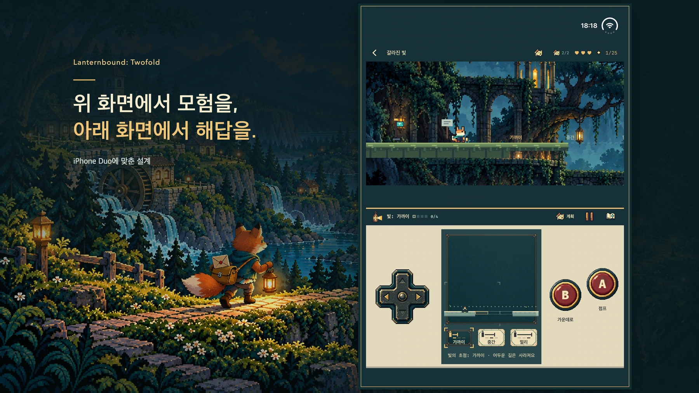

홍보용 일러스트입니다. 실제 게임 화면은 아래에서 볼 수 있습니다.
편지 한 통이 다음 길을 엽니다.
폭풍으로 길이 끊기고 새 지도에서 몇몇 집이 빠졌습니다. 어린 여우 집배원이 되어 이웃의 소식을 전하고, 답장이 끊긴 스승에게 보낼 개인적인 편지도 품고 떠나세요. 한 번의 배달이 다음 주소로 이어집니다. 본편의 열두 통을 모두 전하면 완전한 결말에 도달하고, 이후 돌아가 달라진 모습을 살펴볼 수 있습니다.
12개의 챕터
12가지 도구
24개의 선택 수집품

iPhone Duo
위에서는 모험. 아래에서는 다음 한 수.
위쪽에는 세계가, 아래쪽에는 지도와 도구, 익숙한 조작 버튼이 자리합니다. 내부 화면을 게임 세계가 조작부 위에 오도록 사용하세요. 지원되는 평평한 배치에서도 같은 구성을 유지합니다.
- 방향키로 이동하고 A로 점프하며 B로 현재 도구를 사용합니다.
- 계획을 열면 시간이 멈춥니다. 지도로 경로를 살핀 뒤 실시간 플레이로 돌아가세요.
- 아래에서 장치를 준비하고 위에서 뛰어넘으세요. 계획에 따라 갈 수 있는 길이 달라집니다.
눈에 띄지 않는 길도 살펴보세요.
나방 표시를 따라 어두운 통로로 들어가세요. 위로 올라가 다른 길을 찾고, 아래의 터널과 숨겨진 방도 탐험해 보세요. 각 장에는 작은 이야기가 담긴 선택 수집품이 두 개씩 있습니다.


하나를 배우고, 둘을 연결하세요.
빛으로 길을 드러내고 부메랑으로 종을 울리세요. 발판을 멈추고 거울을 돌리거나 잔상을 스위치 위에 남겨 보세요. 각 장은 네 가지 주요 도구 도전과 지정된 두 도구를 이어 쓰는 퍼즐로 구성됩니다. 일부 샛길에서는 사용 순서도 달라집니다.

실제 게임 화면을 포함한 홍보 이미지입니다.포스터 보기 ↗

준비 중 · 심사 제출 및 판매 전
한 번의 구매로, 온전한 모험.
Duo 전용 유료 버전으로 준비 중입니다. 한 번 구매하면 열두 장 전체를 즐길 수 있으며 광고, 구독, 앱 내 구매가 없습니다. 미국 예정 가격은 US $9.99입니다. 지역별 최종 가격과 출시 여부는 정식 App Store 페이지에 안내됩니다.
미국 예정 가격 US $9.99지원 ↗